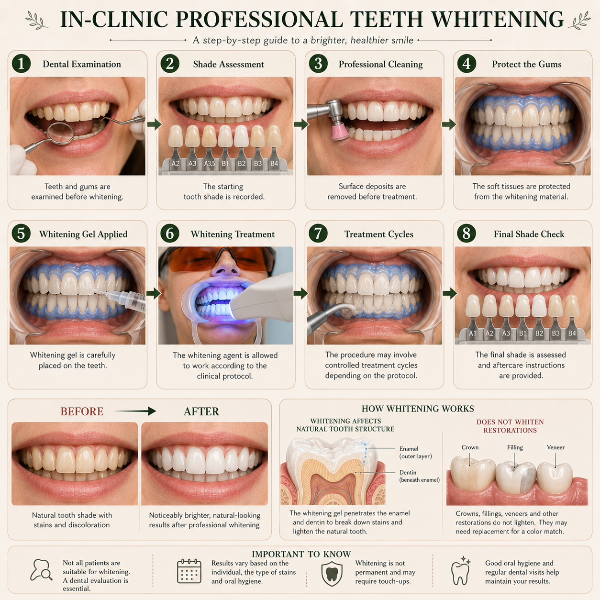

Teeth whitening is a popular cosmetic dental treatment designed to lighten the colour of natural teeth. But whitening does not work the same way for every type of discoloration.

Teeth whitening is a cosmetic procedure used to make natural teeth appear lighter. Whitening products work by using bleaching agents that can break down certain stains and discoloration within the tooth.
The amount of whitening possible depends on the original colour of the teeth, the cause of discoloration and the whitening method used.
Professional cleaning removes plaque, tartar and some surface stains. Whitening is different — it is intended to lighten the colour of natural tooth structure.
Teeth can naturally have a slightly yellow, cream or off-white appearance. Tooth colour also changes with age.
Other factors that may contribute to discoloration include certain foods and drinks, tobacco use, surface staining, trauma to a tooth and some medications or developmental conditions.
Whitening is generally intended for natural teeth. Before whitening, a dentist may need to check the teeth and gums to determine whether whitening is appropriate.
Existing cavities, gum problems, significant sensitivity or certain types of discoloration may need attention before cosmetic whitening is considered.
Whitening is a cosmetic treatment, but the health of the teeth and gums should be assessed before treatment begins.
The exact procedure depends on the whitening system being used. Professional whitening may involve the application of a whitening agent under controlled conditions.
Your dentist assesses your teeth and gums and discusses your expectations.
The selected whitening system is applied according to the treatment protocol.
Your dentist may provide advice to help maintain the result and manage sensitivity if it occurs.
Temporary tooth sensitivity can occur during or after whitening in some people. The degree of sensitivity varies between individuals.
If you already have significant tooth sensitivity, it is important to discuss this with your dentist before starting whitening.
However, persistent or significant sensitivity should be discussed with your dentist so that the cause can be assessed and the whitening plan adjusted if needed.
Whitening does not change the colour of dental restorations such as crowns, veneers or fillings.
Some types of internal discoloration may also respond differently to conventional whitening and may require another approach.
If only one tooth is significantly darker than the others, your dentist may need to determine the cause before deciding whether conventional whitening is appropriate.
Whitening results are not necessarily permanent. Natural teeth can gradually become darker again because of normal aging, diet, habits and new staining.
A natural-looking, healthy smile does not have to mean extremely white teeth. The best cosmetic result is one that is appropriate for your teeth, your oral health and your expectations.
If you are wondering whether whitening may be suitable for you, you can ask your dental question here.
Ask Dr. Anushka →The information on this page is for general educational purposes only and does not replace an in-person dental examination, diagnosis or personalised professional advice.